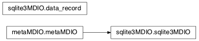

A class that extends metaMDIO to implement SQLite support for metadata storage.
| Created: | 9/28/2014 |
|---|---|
| Author: | Arvind Balijepalli <arvind.balijepalli@nist.gov> |
| License: | See LICENSE.TXT |
| ChangeLog: |
Bases: dict
Smart data record structure that automatically encodes/decodes data for storage in a sqlite3 DB.
Bases: mosaic.metaMDIO.metaMDIO